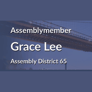
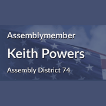

The district
 City Council
City Council State Assembly
State Assembly Congress
Congress Subway
Subway Citi Bike
Citi Bike NYC Ferry
NYC FerryTurn layers on and off. Tap an official's logo or a board's seal for its page. Zoning and land use lot by lot are on the land use map.
About
State Senator Brian Kavanagh represents State Senate District 27. It sits in Manhattan.
The district overlaps community boards Manhattan 1, Manhattan 2 and Manhattan 3.
It is policed by the 1st, 5th, 6th, 7th and 9th Precincts.
It overlaps council districts 1, 2 and 3 and Assembly districts 61, 65, 66 and 74.
Members of the State Senate serve two year terms.
Next on the ballot in November 2026. Find your poll site and sample ballot there, or see what is coming up on the calendar.
State Senate District 27 in numbers
U.S. Census Bureau, American Community Survey 2019-2023 5-year estimates.
Committees
Contact
Overlap
Community boards


Bars show how many of the district's election districts fall in each board.
Overlapping elected officials







| Manhattan CB 3 | 42% of the senate district | 100% of it |
| Manhattan CB 1 | 30% of the senate district | 79% of it |
| Manhattan CB 2 | 28% of the senate district | 84% of it |
| 1 Precinct | 34% of the senate district | 80% of it |
| 9 Precinct | 19% of the senate district | 100% of it |
| 7 Precinct | 16% of the senate district | 100% of it |
| 5 Precinct | 16% of the senate district | 100% of it |
| 6 Precinct | 15% of the senate district | 73% of it |
| Sector 1C | 15% of the senate district | 100% of it |
| Sector 5A | 8% of the senate district | 100% of it |
| Sector 9A | 8% of the senate district | 100% of it |
| Sector 1D | 7% of the senate district | 100% of it |
| Sector 1B | 6% of the senate district | 42% of it |
| Sector 7A | 6% of the senate district | 100% of it |
| Sector 7C | 6% of the senate district | 100% of it |
| Sector 1A | 6% of the senate district | 100% of it |
| Sector 5C | 5% of the senate district | 100% of it |
| Sector 7B | 4% of the senate district | 100% of it |
| Sector 6A | 4% of the senate district | 100% of it |
| Sector 9C | 4% of the senate district | 100% of it |
| School District 2 | 68% of the senate district | 27% of it |
| School District 1 | 31% of the senate district | 100% of it |
| Council District 1 | 60% of the senate district | 86% of it |
| Council District 2 | 30% of the senate district | 70% of it |
| Council District 3 | 10% of the senate district | 14% of it |
| Assembly District 66 | 41% of the senate district | 83% of it |
| Assembly District 65 | 37% of the senate district | 99% of it |
| Assembly District 74 | 11% of the senate district | 30% of it |
| Assembly District 61 | 11% of the senate district | 6% of it |